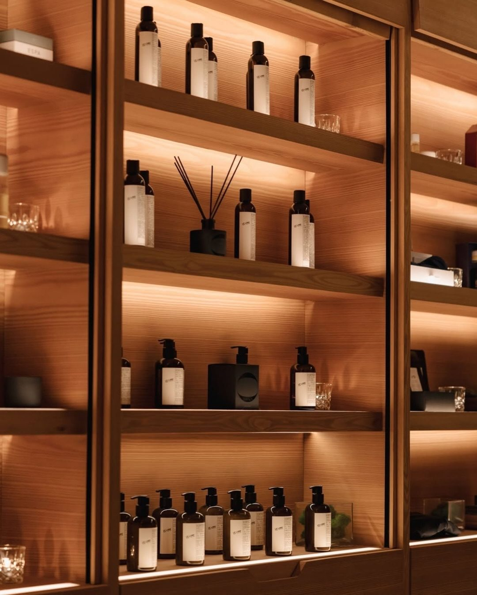
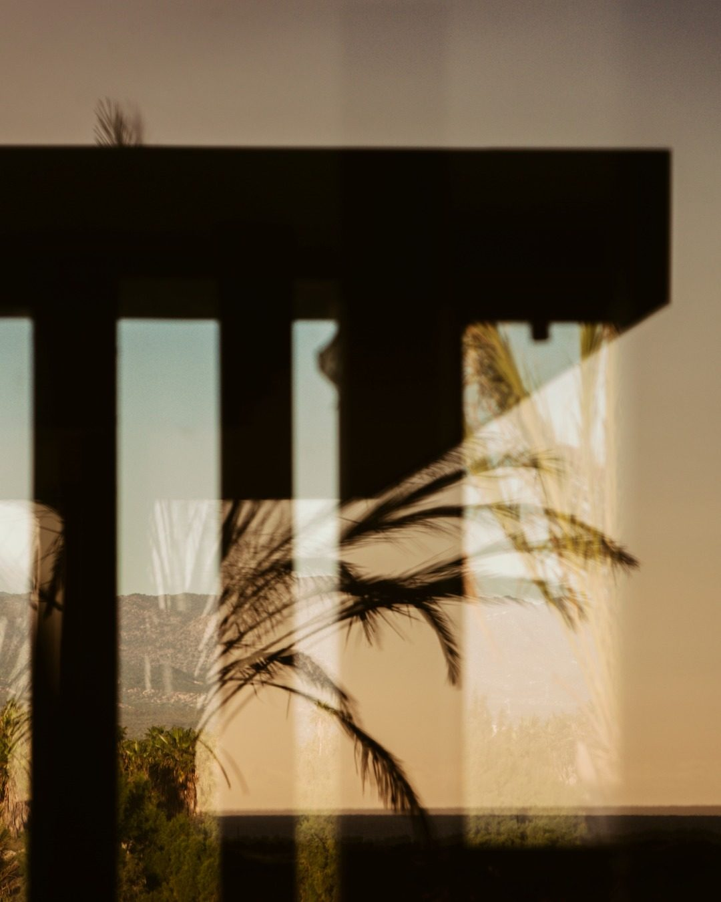
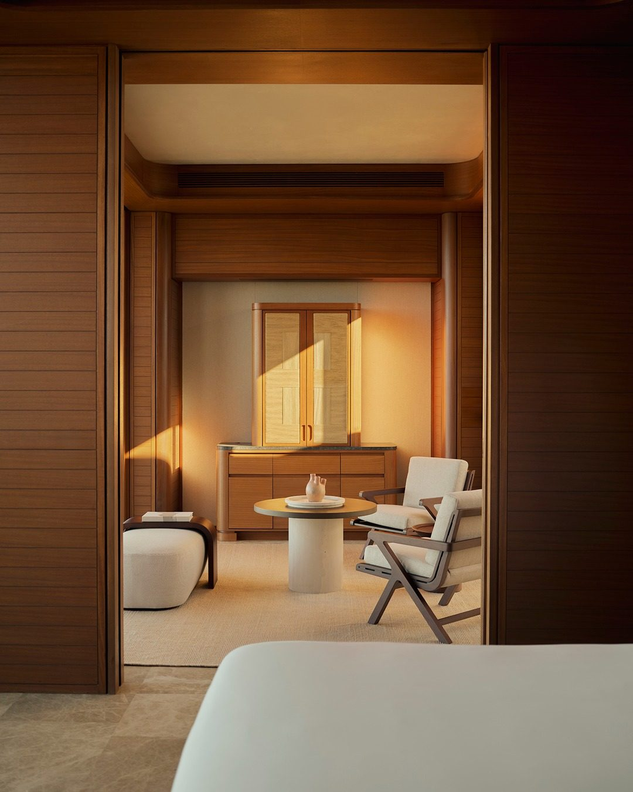
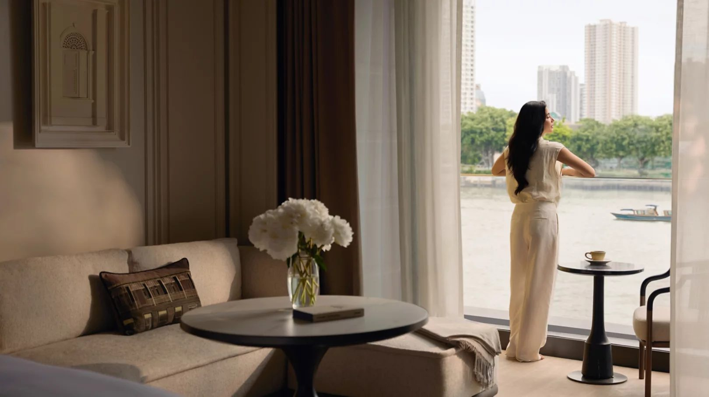
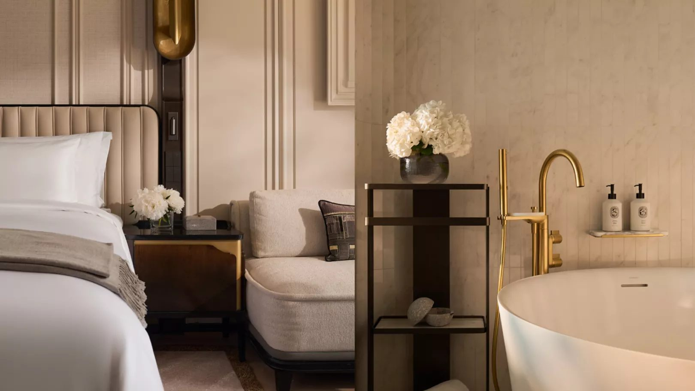
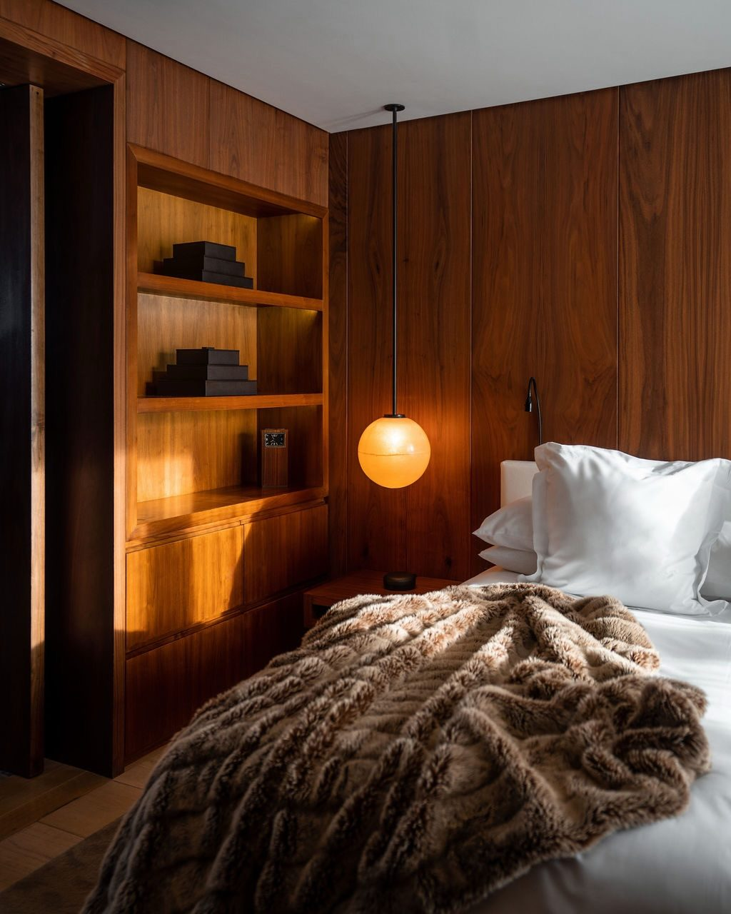
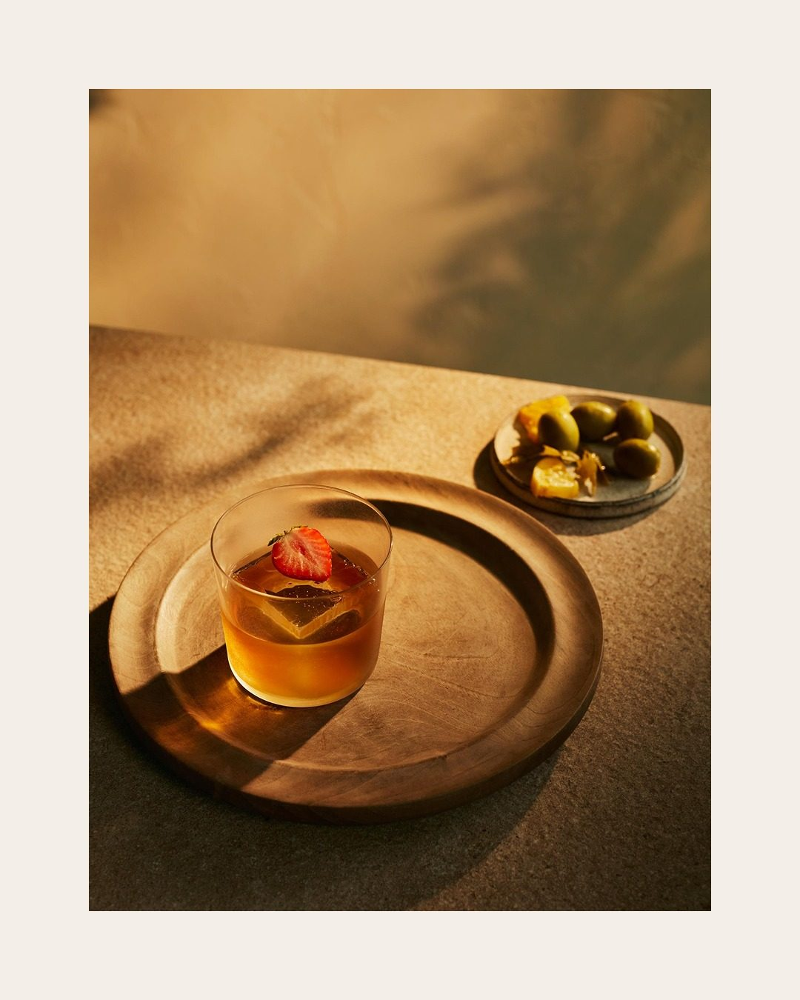

推开酒店的门，第一个到的是鼻子。
你还没看清挑高几米、大理石什么颜色，鼻腔里的受体已经做完了一轮判断：这里干净，这里贵，行李可以放下。这套判断发生在意识之前。
嗅觉是感觉通路里唯一几乎不经过丘脑中转的一条，信号直接进海马体和杏仁核，也就是记忆和情绪住的那两个房间。所以照片会褪色，气味不会。几年后你在别处闻到一丝相同的味道，整间酒店连当时那场雨一起回来。
顶级酒店早就把这件事当成工程在做。不是买一瓶香薰摆在大堂，是有配方、有投放系统、有成本科目的。
一、EDITION：一个味道，复制到全世界
EDITION 是最容易被“闻出来”的那一家。
签名香是 Ian Schrager 找 Le Labo 做的。官方说法很简洁：黑茶与佛手柑的调和。实际闻到的层次更复杂，佛手柑在顶，黑茶在中段，雪松、香根草、麝香压底，还有一点桦木的烟熏感。
关键不在配方，在纪律。马德里、迈阿密、博德鲁姆、东京、新加坡，你在任何一家 EDITION 推门，闻到的是同一瓶。走廊、客房、浴室的洗护，都是它的不同浓度。房型介绍里那句 “Custom-made Le Labo bathroom amenities with signature EDITION scent”，说的就是这一件事。

这在酒店业不算常规。设计师酒店的通例是每店不同，因为建筑不同、客群不同。EDITION 反着来：视觉上每间都不一样，气味上永远相同。
原因不难猜。EDITION 的空间语言太跳，白色楼梯、当代艺术、夜店血统，每间店都有自己的一套。这种品牌需要一个不变的东西压舱，气味是其中最便宜也最有效的。
而且它不藏着卖。官网扩香 €136，蜡烛 €56，酒店里闻到的和买回家的是同一个配方。有个流传的说法是，这个配方打从一开始就是照着“没法被抄”去做的。
二、安缦：同一种性格，不是同一瓶
安缦走的是另一条路，也更含糊。
它的气味属于茶与木这一路：绿茶、白茶在上，檀香、香根草、树脂在下。淡，非常淡。有报道说它会按所在地微调，拉贾斯坦的配方和普吉不会完全一样，但都在同一个家族里，闭着眼也认得出是安缦。
真正让它成立的不是配方，是投放。香氛接进空调风管，跟着风走，全区域匀速给，浓度压得很低。于是你在房间闻到，在走廊闻到，在大堂闻到，却永远找不到源头在哪。

这就是“若有若无”四个字的工程实现。它让气味变成建筑的一部分，而不是摆在玄关的一件东西。摆件会被看见，会被评价，会被嫌多。建筑不会。
顺带纠正一个流传很广的说法：安缦的香买不到。不是。它的蜡烛和香氛油在官方渠道有售，只是你在家点不出那个效果，因为家里没有那套风管。

三、朗廷：一朵白花，用了二十年
朗廷的做法最老派，也最狠：认准一朵花，一直用。
这家 1865 年从伦敦起家的酒店，签名香是姜花，英文 White Ginger。姜花原产东南亚和印度，白瓣，闻起来清淡、微甜、不腻。它不属于一闻就“高级”的香材，在南方和东南亚的花市里论把卖。朗廷把它做成了符号：大堂的花艺、洗浴用品、香氛产品，到处都是它。
这套做法的好处是时间越久越值钱。统一配方是买来的，符号是养出来的。

12 月 20 日，The Langham, Custom House, Bangkok 开门。湄南河边的旧海关大楼，1888 年落成，当年是暹罗对外的关口。整栋楼修复时被 412 个千斤顶手工抬升，一次 2 到 5 毫米，抬了 18 个月。新翼 75 间房，朝河、朝庭院、朝城市天际线。
这是朗廷在泰国的第一家酒店。一个从没住过朗廷的曼谷客人，推开大堂门的那一刻会觉得“这地方我认识”。让他产生这个感觉的不是建筑，是空气里那点姜花。

四、三十秒，判断这家酒店在气味上花了多少心思
不用查资料，站在大堂里就能做完。
一、走廊里还有吗。 只有大堂有味道，多半是一台扩香机。大堂、电梯、走廊、客房一条线下来味道一致，才是系统级的投入。
二、你说得出这是什么味道吗。 说得出是“白茶”或者“薰衣草”，通常是市售复配。说不上来但觉得舒服，才说明调香做了层次。
三、它留在你身上了吗。 第二天外套上还有味，就是浓度过头。克制的做法是让你在房间闻得到，出门就忘，回房又想得起来。

真正的好，是三天后你突然想起来：那家酒店好像有股味道。
说到底
气味是酒店唯一没法被拍照的部分。
大堂可以拍，房间可以拍，早餐可以拍。只有那三秒的空气拍不下来，也发不出去。所以它成了最私人的一层体验，也是最难外包的一层。
下次进门，先别掏手机。闭上眼睛三秒钟。闻到什么，闻到多少，找得到源头吗。这三个答案，比房价更能说明这家酒店把钱花在了哪。
你们住过哪家酒店，隔了几年还记得那个味道？

curiohood · Stay Curious
事实核对：EDITION 与 Le Labo 的签名香、扩香 €136 与蜡烛 €56 的售价，据 EDITION 官网与 El País 报道；姜花为朗廷品牌签名香，据朗廷酒店集团资料；The Langham, Custom House, Bangkok 75 间房、2026 年 12 月 20 日开业、旧海关大楼 1888 年落成、412 个千斤顶、抬升 18 个月，据朗廷酒店集团新闻稿及开业报道；安缦香调据品牌与香氛行业报道，具体配方未公开。